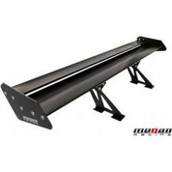

Grasz już
0
wirtualnych kwartałów.
Zapisz stan barszczu
Nie zapisano.
Wczytaj stan barszczu
Nie wczytano.
Koszt:
10
Posiadasz:
barszczu i
siły wojska.
Twoja moc klikania wynosi
1
Podwój moc kliku.
Koszt:
50

Spoilery:
0
Fajne są. Dają
99999999
barszczy na sekundę.
Koszt:
100